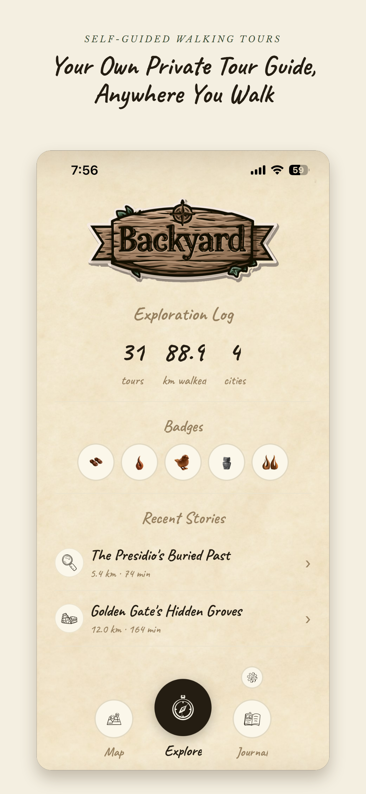
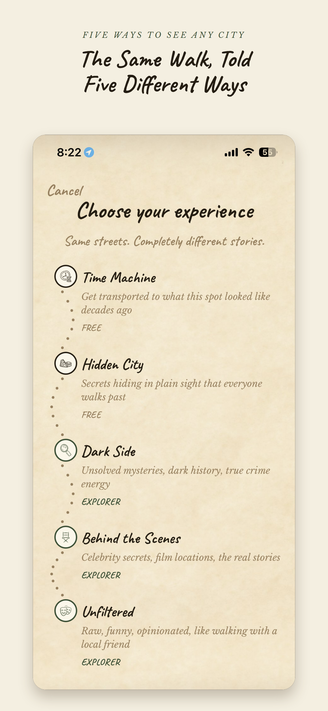
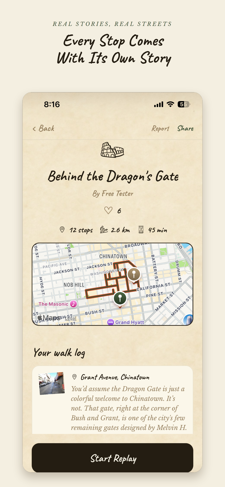
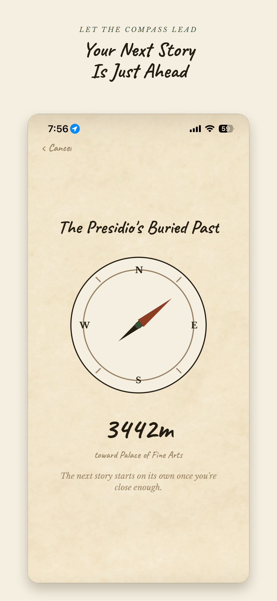
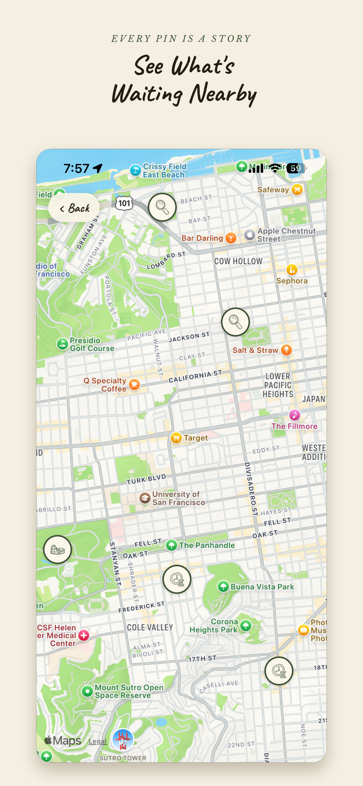
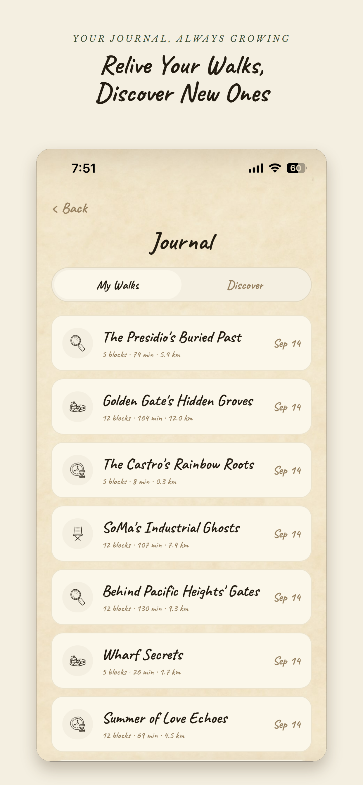

Backyard turns any walk into a story. Wherever you are, a talking tree guide narrates real, fact-checked history and hidden stories about the exact block you're standing on, triggered automatically as you walk. No planning, no searching, just walk and listen.
Fact-checked stories about any street, anywhere in the world. Walk, listen, and discover routes shared by a growing community of explorers.
Try Backyard for FreeFree to download, with an optional premium upgrade.
Get transported to what this spot looked like decades ago.
Secrets hiding in plain sight that everyone walks past.
Unsolved mysteries and dark history.
Film locations and celebrity secrets.
Raw, funny, and opinionated, like walking with a local friend.
Every walk is saved to your journal: distance, duration, and the story behind every stop, so you can relive it anytime. Browse routes other explorers have shared, and share your own.
Track your progress in your Exploration Log: tours completed, distance walked, cities visited, and badges for streaks, distance milestones, and more.
Upgrade to unlock Dark Side, Behind the Scenes, and Unfiltered moods, Dramatic and Warm narration voices, a higher daily story limit, and the ability to ask questions anywhere on your walk.





